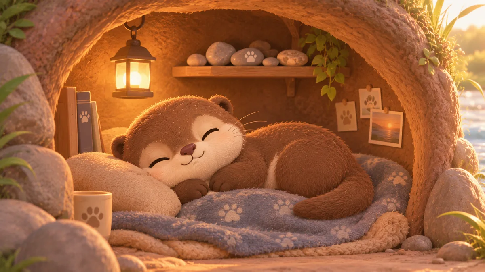
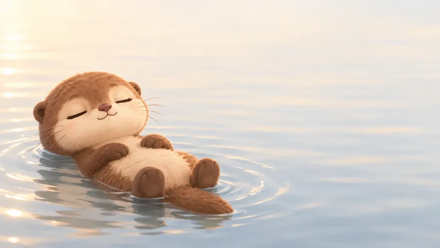

Prends soin de toi. Ta loutre s'occupe du reste.
Pour les jours où prendre soin de toi demande un effort : stress, fatigue, moral en berne. Coche les petites choses que tu fais pour toi, et ta loutre grandit avec toi.
Je veux ma loutreMon humeur ce matin
Mes petits objectifs
Encore 2 objectifs et Loulou part explorer la Loire
Pensée pour les étudiantes et étudiants à bout, les personnes TDAH, et tous les jours où tout paraît lourd.Ottle ne te juge jamais et ne te punit jamais. Même les jours où tu ne coches rien.
Petite, curieuse et un peu maladroite
Tu lui donnes un nom, tu choisis ses couleurs, et elle t'accompagne au quotidien.
Chaque petite chose que tu fais pour toi lui donne de l'énergie. Elle grandit, part explorer les rivières de France et revient avec des souvenirs à te raconter.
Les jours où tu n'y arrives pas, elle reste à côté de toi. Elle ne t'en veut jamais.
Une journée avec ta loutre
Le matin, dis-lui comment tu te sens
Un petit bilan d'humeur en quelques secondes. Ta loutre l'écoute, puis part à l'aventure.
Dans la journée, coche tes petits objectifs
Des choses simples, que tu choisis toi-même : te lever, manger, sortir, appeler un proche. Chacune lui donne de l'énergie.
Le soir, elle revient te raconter
Elle te partage ce qu'elle a découvert, et tu notes un bon moment de ta journée. Jour après jour, elle grandit avec toi.
Ses cartes postales
Chaque soir, ta loutre te rapporte une carte postale de son aventure : un lieu de France, une petite chose de la nature, une rencontre au bord de l'eau. Parfois, une question pour toi.
Ses récits suivent ton humeur. Les jours de fatigue, elle aussi prend son temps.
Aujourd'hui je suis passée sous un très vieux pont. Les pierres étaient chaudes de soleil. Je me suis demandé combien de loutres étaient passées là avant moi.
Loulou
Et toi, tu as vu quelque chose de beau aujourd'hui ?
Nouveau galet : galet de LoireEt quand tu en as besoin
Respirer
Des exercices de respiration guidés pour te calmer, te concentrer ou t'endormir.
Écrire
Un journal avec des questions simples, pour y voir plus clair et garder les bons moments.
Suivre ton humeur
Voir, semaine après semaine, ce qui te fait du bien et ce qui te pèse.
À quoi ressemblera Ottle
L'appli est en cours de création : ces écrans peuvent encore évoluer.
Fais glisser pour voir les 3 écrans
- Saison 112 galets
La Loire
Étape 3 sur 24
Prochaine étape : les îles de sableEncore 2 objectifs pour y arriverLa carte de la rivière
Chaque petite chose que tu fais pour toi fait avancer ta loutre d'une étape.
- La catiche12 galets

3 objets placésMa collection
4 sur 24- Loire
- Château
- Prairie
- Perle
- À trouver
- À trouver
Nouvel objet : une lanterneÀ placer dans la caticheLa catiche et tes galets
Décore la maison de ta loutre et garde un galet de chaque étape, comme un petit album.
- Mode repos12 galets

Loulou fait la planche
Aujourd'hui, pas d'objectifs. Tu as le droit de juste flotter : ta loutre reste avec toi.
Respirer avec LoulouInspire 4 secondes, souffle 6 secondesLes jours de repos comptent aussi
Faire la planche
Les jours sans énergie, ta loutre flotte avec toi et ne te demande rien. Une respiration guidée reste à portée de main.
Se tenir la main
Dans la nature, les loutres se tiennent la main en dormant pour ne pas dériver. Dans Ottle, tu relies ta loutre à celle d'un ami.
Un jour difficile ? Il peut te tenir la main d'un simple geste.
Faire la planche
Les jours sans énergie, active le mode repos. Ta loutre flotte tranquillement et ne te demande rien. Se reposer, c'est aussi prendre soin de soi.
Les rivières de France
Ta loutre descend la Loire, la Seine, la Dordogne… et te rapporte un galet de chaque aventure. Ta collection devient un petit album de tes progrès.
Sa catiche
La catiche, c'est le vrai nom de la maison de la loutre. Décore-la à ton goût, au fil des récompenses.
Questions fréquentes
C'est gratuit ?
Oui. Tout ce qui sert à prendre soin de toi restera gratuit, pour toujours. Une version premium permettra de soutenir l'appli et de débloquer des petits plaisirs pour ta loutre (objets, couleurs, décorations). Les personnes inscrites sur la liste d'attente auront une offre « membre fondateur » réservée.
C'est pour qui ?
Pour toutes celles et ceux pour qui prendre soin de soi demande un effort : étudiantes et étudiants à bout, personnes TDAH, ou simplement les journées où tout paraît lourd.
Est-ce que ça remplace un suivi psy ?
Non. Ottle t'aide à prendre de bonnes habitudes au quotidien, mais ce n'est pas un outil médical. Si tu traverses un moment difficile, parles-en à un professionnel ou appelle le 3114 (numéro national de prévention du suicide, gratuit, 24h/24).
Quand sort l'appli ?
En 2027. Les personnes inscrites sur la liste d'attente pourront la tester en premier.
Fais partie des premières personnes à adopter ta loutre
Laisse ton email, on te prévient dès qu'Ottle sort
Mode aperçu : ce formulaire n'enregistre rien tant que Tally n'est pas branché
C'est noté, ta loutre t'attend
Tu feras partie des premières personnes prévenues du lancement, avec ton offre membre fondateur. En attendant, une loutre ne flotte jamais seule : partage Ottle à quelqu'un dont tu aimerais tenir la main.
Ton email sert uniquement à te prévenir du lancement d'Ottle. Il n'est ni vendu ni partagé. Tu peux demander sa suppression à tout moment à ottle.app@gmail.com.